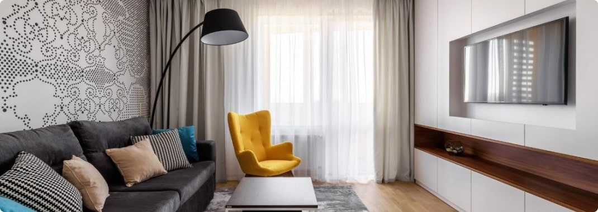

Як правильно спати і висипатися
Кожна людина хоча б раз у житті задавався питанням, як правильно спати? Питання закономірно виникає, коли після восьми годинного сну зберігаються почуття втоми і знемоги. Причинами можуть бути невірно організований відпочинок, неякісні спальне приладдя, незручна поза, поганий мікроклімат приміщення і багато іншого. Регулярне недосипання може стати причиною розвитку багатьох хронічних захворювань. Тому ми підготували для вас ряд корисних рекомендацій, які допоможуть залишатися здоровими, бадьорими і енергійними.
Важливість правильного сну для людини
Сон - це фізіологічний процес відновлення організму на клітинному рівні. Він є невід'ємною частиною нашого життя, як і період бодьорості. Щоб біоритми не збивати, необхідно дотримуватися режиму. Важливо засинати і прокидатися в один час, а також стежити за тривалістю сну. Для кожної людини цей показник індивідуальний. Вчені вважають, що в середньому потрібно спати близько 7-10 годин.
В якій позі правильно спати
Може здатися дивним, проте вибір правильної пози - це 50% успіху. Багато хто звик вважати, що досить прийняти горизонтальне положення і все піде своєю чергою. Ми просто лягаємо в ліжко і не замислюємося про те, як розташований наш хребет і внутрішні органи. А варто було б, адже від цього залежить безліч важливих моментів.
Спати на животі. Чи не найкраще становище тіла для нічного відпочинку. У такій позиції відсутній природний вигин поперекового відділу хребта. А якщо врахувати повернену в бік голову і навантаження на шию, то ніякої користі вона не принесе. На животі треба спати тільки при виникненні проблем з травленням, зокрема, при здутті. Тому дітей, які страждають від кишкових кольок, кладуть на животик.
Виходячи з численних опитувань, більше 70% населення планети вибирають позицію на боці. У так званій позі ембріона сон є найбільш інтенсивним і ефективним. У такому положенні ми проходили стадію розвитку в утробі матері. По-справжньому здоровим відпочинок буде тільки на лівому боці.
Виходячи з давньоіндійських і китайських навчань, найкраще засипати головою на північ або північний схід. Оскільки туди вказує магнітна стрілка поля Землі. Сплячі головою за цим напрямком будуть здорові, бадьорі і енергійні протягом усього дня. Їх ніколи не наздожене безсоння і тривожність. Згідно ведичним писанням, голова повинна бути спрямована на південь або схід. У такому положенні енергія планети зможе захистити сплячого і заповнити витрачені днем сили. Християни ж вважають, що неправильно спати вночі ногами до дверей, щоб не накликати смерть.
Використовуйте якісні спальне приладдя. Віддавайте перевагу матрацам з ортопедичним ефектом. Вони здатні забезпечити здоровий сон і зберегти здоров'я хребта. Виберіть максимально комфортні подушку і ковдру. Постільна білизна і піжама повинні бути виготовлені з натуральних тканин. Не грамотно облаштоване спальне місце може стати причиною частих пробуджень. Не зіткнутися з такою проблемою допоможе продукція фабрики KROVATO.
KROVATO - коли потрібні якісні меблі за доступною ціною!
Якщо в пошуковий рядок браузера ввести запит: «Куплю ліжко, шафу, диван», система видасть сотні продавців, що спеціалізуються з продажу цього товару. Але далеко не всі магазини та сайти в інтернеті можуть запропонувати такий самий різноманітний асортимент, як наша компанія. Та й з нашими цінами конкурувати можуть мало хто. Адже товар ми отримуємо безпосередньо від виробників, не переплачуючи за послуги посередників. До того ж, продажі ми ведемо як онлайн, так і в салоні, при цьому ціна на асортимент онлайн та офлайн - однакова.
Ми співпрацюємо тільки з найкращими вітчизняними та зарубіжними фабриками та компаніями, які отримали визнання покупців та експертів меблевої справи. Для нас важливо, щоб товар, який ми продаємо, відповідав міжнародним стандартам якості, був із сертифікованих матеріалів – довговічних, красивих та екологічно чистих. Ми з особливою ретельністю відбираємо пропозиції для магазину, тому можемо поручитися за їхню якість і впевнено рекомендувати клієнтам. У нас ви легко знайдете меблеві серії в класичному та модерному стилі, лінійки для оформлення житла в дусі романтики або скандинавського лаконізму.
Оформлення вітальні. Які м'які меблі краще вибрати?
Вітальня – це основна кімната у кожному будинку. Саме вона служить для прийому гостей, проведення часу всією сім'єю та просто для відпочинку у приємній теплій атмосфері. Оформляючи свій будинок та вітальню зокрема, всі намагаються зробити її максимально зручною, комфортною та красивою. Основним та центральним елементом оформлення вітальні, як і будь-якої іншої кімнати, є м'які меблі.
Будь-які меблі для вітальні повинні бути не тільки стильними і красивими, але і функціональними. На таких меблів має бути зручно та приємно відпочивати та приймати гостей. Однак сьогодні існує величезна різноманітність найрізноманітніших м'яких меблів для вітальні, яка підходить для кімнат різних розмірів і форм. На чому варто зупинити свій вибір? Як краще оформити свою вітальню, щоб вам було комфортно, а гості хотіли приходити до вас знову та знову?
На сайті інтернет магазину Кровато представлено велику різноманітність м'яких меблів для вітальні, серед яких кожен зможе вибрати для себе найбільш вдалий варіант. У нас ви знайдете:
-
Прямі дивани. Такі дивани вважаються класикою. Вони підходять для віталень будь-яких форм та розмірів. Прямий диван виглядає стильно та лаконічно, на ньому зручно відпочивати, приймати гостей або навіть спати. Прямі дивани можуть стояти біля стіни, так і в центрі кімнати. Багато моделей прямих диванів легко розкладаються, перетворюючись на повноцінне спальне місце. Також більшість диванів мають великі та місткі ніші, які є додатковим місцем для зберігання;
-
Кутові дивани Кутові дивани вважаються найзручнішими та комфортнішими. Вони ідеально підійдуть для приємного проведення часу в колі сім'ї або друзів. Кутові дивани в основному використовуються для оформлення великих віталень, так як вони займають багато місця, і для кімнат з невеликою площею просто не підійдуть;
-
Тахти. Тахта - це одна з варіацій дивана, але стильніша і мінімалістична. Виглядають тахти дуже незвично і можуть підійти для будь-якого інтер'єру. Також тахти більше ніж звичайні дивани підходять для сну, оскільки в їх основі не пружинні блоки, а дерев'яні ламелі або ортопедичні матраци;
-
Крісла. Крісло – це особливий предмет інтер'єру. Сучасні дизайнери не часто використовують його, вважаючи застарілим, проте саме крісла створюють особливий затишок та комфорт у будь-якій кімнаті. Сьогодні існує величезна різноманітність класичних та сучасних моделей крісел, що дозволяє кожному відшукати ідеальне крісло для свого будинку;
-
Набір меблів. Комплект м'яких меблів – це відмінне рішення для тих, хто хоче меблювати свою вітальню не лише диваном, а й кріслами. Існують набори з одним або двома кріслами, із прямими або кутовими диванами. Основна перевага будь-якого готового меблевого гарнітура – це те, що предмети меблів у ньому ідеально поєднуються один з одним, і вам не потрібно буде витрачати свій час та сили на їхній підбір.
Підбір м'яких меблів для вітальні – це заняття непросте. Однак при виборі та покупці меблів для своєї вітальні пам'ятайте, що якісні м'які меблі повинні бути не тільки красивими, але й зручними для вас і всіх мешканців вашого будинку.